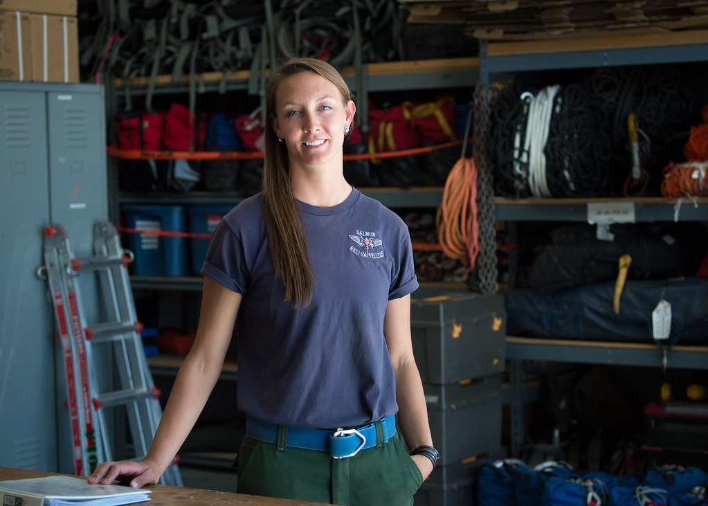
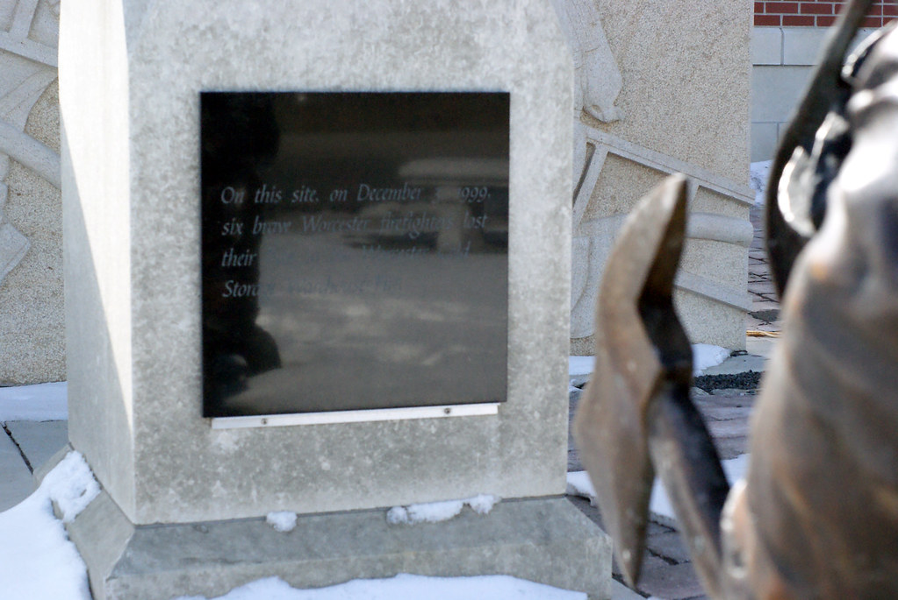

인천 쿠팡 물류센터 화재, 사흘째 지속
인천의 한 쿠팡 물류센터에서 발생한 화재가 20일까지 사흘째 이어지면서 소방 당국이 진화에 총력을 기울이고 있다. 불이 난 지 상당한 시간이 지났음에도 완전 진화에 이르지 못하면서, 대형 물류시설 화재의 고질적인 어려움이 다시 한 번 드러났다는 지적이 나온다.
물류센터 화재는 일반 건물 화재와 달리 진압이 유독 까다로운 것으로 알려져 있다. 내부에 적재된 대량의 상품과 포장재가 불쏘시개 역할을 하는 데다, 선반이 미로처럼 배치된 구조 탓에 소방대원이 발화 지점까지 접근하기 어렵기 때문이다. 여기에 건물 특성상 창문이 적어 내부 열기와 연기가 빠져나가지 못하면서 재발화가 반복되는 경우도 많다.

소방 당국은 화재 초기부터 다수의 인력과 장비를 투입해 방어선을 구축하고, 불길이 인접 구역으로 번지는 것을 막는 데 주력해 왔다. 건물 내부 깊숙한 곳에 남아 있는 불씨를 잡기 위해 진화 작업은 교대로 밤낮없이 계속되고 있는 것으로 전해졌다.
화재가 장기화되면서 주변 지역 주민들의 불편과 불안도 커지고 있다. 연기와 그을음 냄새가 인근으로 퍼지면서 창문을 열기 어렵다는 호소가 이어지고 있고, 어린이나 호흡기 질환자가 있는 가정에서는 건강 영향에 대한 걱정도 나온다. 당국은 대기 상황을 살피며 주민 안전에 미칠 영향을 점검하고 있다.

물류 업계에도 여파가 미칠 수 있다는 관측이 나온다. 해당 센터가 담당하던 물량이 다른 센터로 분산되면 일부 지역의 배송 일정에 차질이 생길 가능성이 있기 때문이다. 화재 피해 규모와 복구에 걸리는 시간에 따라 영향의 범위가 달라질 것으로 보인다.
완전 진화 이후에는 정확한 화재 원인 조사가 뒤따를 예정이다. 물류센터 화재는 과거에도 반복적으로 발생하며 안전 관리 체계에 대한 사회적 논의를 촉발해 온 만큼, 이번 사고 역시 대형 물류시설의 화재 예방 대책과 초기 대응 체계를 재점검하는 계기가 될 것이라는 목소리가 나오고 있다.